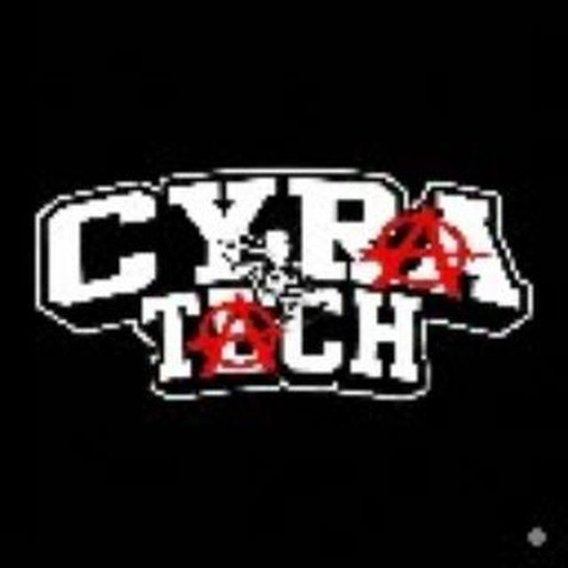
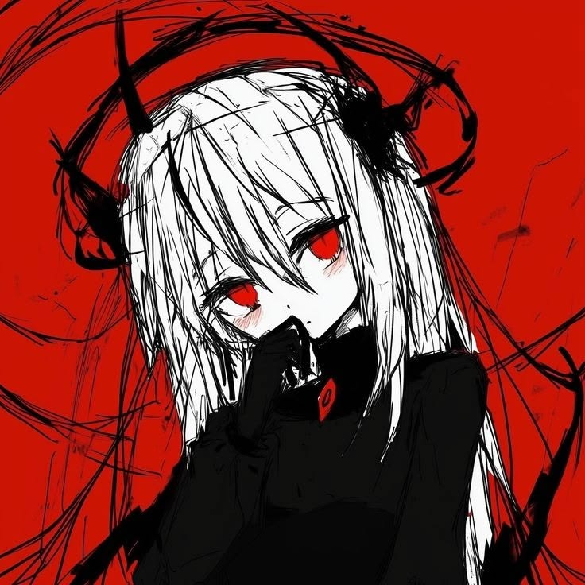

LOADING 01...
Saya sedang membangun kemampuan coding melalui project nyata, eksperimen dan proses belajar. Portfolio ini memperkenalkan perjalanan, kemampuan, karya dan pencapaian saya.

Perkenalan dan perjalanan belajar coding saya.
Saya mulai belajar coding sekitar dua bulan lalu. Dari dasar, saya mulai mencoba membuat website, game, API dan berbagai project praktis.
Web development, programming, API integration, database, cybersecurity research dan game development.
Current learning level berdasarkan apa yang sedang saya pelajari dan praktikkan.
Project menggunakan file gambar dan video langsung dari folder portfolio.
Project game sebagai bagian dari perjalanan belajar dan pengalaman pekerjaan pertama.
Eksperimen website dengan HTML, CSS, JavaScript dan teknologi web lainnya.
A collection of milestones from my early development journey, built through practice, real projects, and continuous improvement.
Exploring application security through responsible testing and vulnerability research. I focus on identifying potential security weaknesses and reporting them responsibly to developers, helping improve application security and reduce the risk of data exposure or unauthorized access.
Developing game projects as a practical way to strengthen my programming and problem-solving skills. I challenge myself to complete individual game projects within approximately 7 days, covering development, testing, refinement, and final presentation.
Successfully handling my first paid development project with a target completion time of approximately 7–14 days. My focus is on delivering functional results with clean implementation, attention to detail, and a professional visual presentation.
In approximately two months of learning and practicing programming, I have explored multiple technologies while building websites, games, and personal projects. This journey has helped me develop practical skills, strengthen my problem-solving approach, and build a portfolio focused on continuous improvement, creativity, and professional presentation.
Untuk project, kerja sama atau komunikasi profesional.
File digunakan langsung dari folder CyberXCYRA.